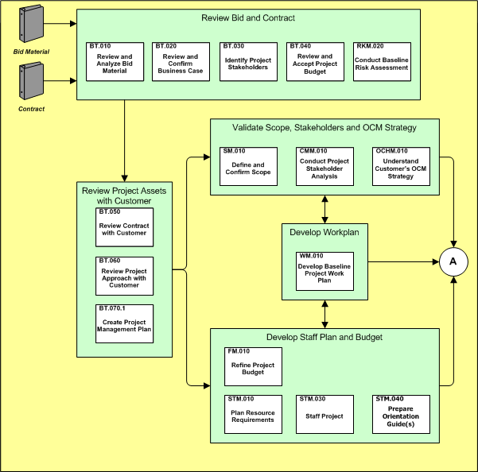
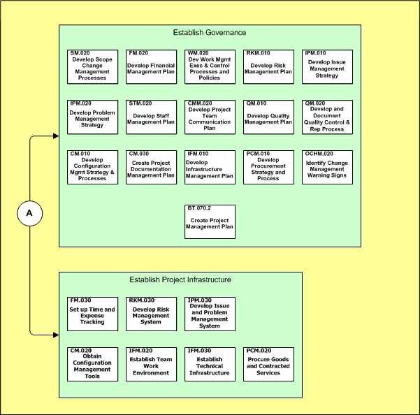

OUM |
Phase Overview |
||
Method Navigation |
Current Page Navigation |
||
|
|
||||||||
The purpose of the Project Start Up phase is to provide strong and clear directions for producing a product or service which delivers identified benefits or purpose for the business. During the Project Start Up phase, resources are allocated to accomplish specific objectives, satisfy needs, and set expectations through a planned and organized approach.
A key output of the Project Start Up phase, the Project Management Plan, provides the necessary objectives, strategies, plans, methods, tools, resources and procedures to achieve the expected benefits or purpose in the business. The Project Start Up phase is considered the most important phase in the project. The tasks within the Project Execution and Control phase are built on the foundation established in Project Start Up.
There must be a strong commitment to perform the project from the business and the prime supplier. A forum should be established to share the project's status, risks and issues with the key stakeholders and obtain feedback.
The following lists contains prerequisites that must exist in the project organization in order to deliver the solution completely and satisfactorily. These prerequisites must be in place prior to the Project Execution and Control phase.
The following is a list Project Start Up phase objectives:
The Manage context diagram illustrates the processes within the Project Start Up phase.

Best practice suggests the key Project Start Up activities are shown on the project plan. These activities are generally short term, lasting no longer than four to six weeks even on the largest of projects.
The level of granularity of Project Start Up tasks shown on the Gantt chart cannot be prescribed. This level depends on many factors. Factors include the role of all involved during Project Start Up and the size and complexity of the project. It is recommended that key activities arising from Project Start Up are shown as discrete tasks on the Gantt chart.
See the Manage example workplan (in MS Project) for an example of the Project Start Up activities and sequence.
An objective of the Project Start Up phase is to understand and influence the expectations of key project stakeholders. Document and communicate your vision of the project to the Project Sponsor, key stakeholders, management, and the project team. Evaluate the project proposal as your starting point for Project Start Up. How have expectations been set? Have there been changes since the project proposal was accepted?
The initial scoping in the Project Start Up phase covers all areas of known risk, working policies, agreed approaches, communication, and implementation strategies. Original project proposals or Project Charters may already include some of these topics. However, in creating the original project proposal, assumptions may have been used. During Project Start Up, you must verify all the documented and undocumented assumptions.
Note: The main objective of the Project Start Up phase is to prepare the Project Management Plan. To conduct the project without the Project Management Plan, you risk not having a point of reference for change control, and must rely heavily on verbal commitments, which can often lead to serious misunderstandings and disputes about what was agreed to.
In some cases, clarification and justification may be needed before approving work products. The Project Management Plan can be used to explain why certain methods, approaches, and techniques were used. If organized correctly it can serve as the vehicle for justifying why and how project tasks are being performed. Within this context, the planning for reuse should be established to increase productivity and reduce costs as well as risks. Reuse of work products will help to reduce the risk of the project since these provide actual examples of previous project work.
The following illustrates the key project management components of the Project Management Plan

Arrange for a review with key stakeholders, if possible upon starting the project. The purpose of the review is to determine the overall health of a project and its prospects for success, check the completeness of plans, and ensure a clear understanding of project control and completion procedures.
Suggestion: Use start up meetings to communicate the plans to the project stakeholders. Consider separate meetings for management and project staff. A formal presentation should be delivered to the project sponsor, as a minimum.
The primary techniques you use in this process during Project Start Up are stakeholder analysis, risk assessment, interviewing, negotiation, and presentation. Use these techniques to discover and cater to all factors which could ultimately jeopardize the project’s success.
If you are using a Scrum approach, use the Managing an OUM Project using Scrum technique. Use this link to access the phase-specific guidance for Scrum.
This phase includes the following tasks:
| ID | Task | Work Product | Key |
Type |
|---|---|---|---|---|
Review Bid and Contract |
||||
BT.010 |
Reviewed Bid Material |
Core |
||
BT.020 |
Reviewed Business Case |
Core |
||
BT.030 |
Identified Project Stakeholders |
Core |
||
BT.040 |
Accepted Project Budget |
Core |
||
RKM.020 |
Baseline Risk Assessment |
Y |
Core |
|
Review Project Assets with Customer |
||||
BT.050 |
Reviewed Contract |
Y |
Core |
|
BT.060 |
Reviewed Project Approach |
Y |
Core |
|
BT.070.1 |
Project Management Plan |
Y |
Core |
|
Validate Scope, Stakeholders and OCM Strategy |
||||
SM.010 |
Validated Scope |
Y |
Core |
|
CMM.010 |
Project Stakeholder Analysis |
Core |
||
OCHM.010 |
Customer's Organization Change Management Strategy |
Y |
Core |
|
Develop Workplan |
||||
WM.010 |
Baseline Project Workplan |
Y |
Core |
|
Develop Staff Plan and Budget |
||||
FM.010 |
Approved Project Budget |
Y |
Core |
|
STM.010 |
Resource Requirements |
Core |
||
STM.030 |
Staffed Project |
Y |
Core |
|
STM.040 |
Project Orientation Guide |
Core |
||
Establish Governance |
||||
SM.020 |
Scope Change Management Processes |
Y |
Core |
|
FM.020 |
Financial Management Plan |
Y |
Core |
|
WM.020 |
Work Management Plan |
Y |
Core |
|
RKM.010 |
Risk Management Plan |
Y |
Core |
|
IPM.010 |
Issue Management Strategy |
Y |
Core |
|
IPM.020 |
Problem Management Strategy |
Y |
Core |
|
STM.020 |
Develop Staff Management Plan | Staff Management Plan | Y |
Core |
CMM.020 |
Develop Project Team Communication Plan | Project Team Communication Plan | Y |
Core |
QM.010 |
Develop Quality Management Plan | Quality Management Plan | Y |
Core |
QM.020 |
Develop and Document Quality Control and Reporting Process | Quality Control and Reporting Process | Core |
|
CM.010 |
Develop Configuration Management Strategy and Processes | Configuration Management Strategy and Processes | Y |
Core |
CM.030 |
Create Project Documentation Management Plan | Documentation Management Plan | Core |
|
IFM.010 |
Develop Infrastructure Management Plan | Infrastructure Management Plan | Y |
Core |
PCM.010 |
Develop Procurement Strategy and Process | Procurement Strategy and Process | Y |
Core |
OCHM.020 |
Identify Change Management Warning Signs | Change Management Warning Signs | Core |
|
BT.070.2 |
Project Management Plan |
Y |
Core |
|
Establish Project Infrastructure |
||||
FM.030 |
Set up Time and Expense Tracking | Time and Expense Tracking | Core |
|
RKM.030 |
Develop Risk Management System | Risk Management System | Core |
|
IPM.030 |
Develop Issue and Problem Management System | Issue and Problem Management System | Core |
|
CM.020 |
Obtain Configuration Management Tools | Configuration Management Tools | Core |
|
IFM.020 |
Establish Team Work Environment | Established Team Work Environment | Core |
|
IFM.030 |
Establish Technical Infrastructure | Established Technical Infrastructure | Core |
|
PCM.020 |
Procure Goods and Contracted Services | Service Orders | Core |
|


These factors have been shown to be critical to the success of this phase:

Copyright © 2006, 2016, Oracle and/or its affiliates. All rights reserved.